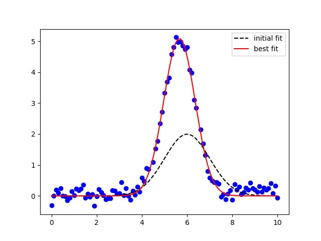

Note
Click here to download the full example code
doc_model_with_nan_policy.py¶
Out:
[[Model]]
Model(gaussian)
[[Fit Statistics]]
# fitting method = leastsq
# function evals = 22
# data points = 99
# variables = 3
chi-square = 3.27990355
reduced chi-square = 0.03416566
Akaike info crit = -331.323278
Bayesian info crit = -323.537918
[[Variables]]
amplitude: 8.82064765 +/- 0.11686065 (1.32%) (init = 5)
center: 5.65906365 +/- 0.01055590 (0.19%) (init = 6)
sigma: 0.69165290 +/- 0.01060625 (1.53%) (init = 1)
fwhm: 1.62871808 +/- 0.02497581 (1.53%) == '2.3548200*sigma'
height: 5.08771012 +/- 0.06488211 (1.28%) == '0.3989423*amplitude/max(2.220446049250313e-16, sigma)'
[[Correlations]] (unreported correlations are < 0.100)
C(amplitude, sigma) = 0.610
##
import warnings
warnings.filterwarnings("ignore")
##
# <examples/doc_model_with_nan_policy.py>
import matplotlib.pyplot as plt
import numpy as np
from lmfit.models import GaussianModel
data = np.loadtxt('model1d_gauss.dat')
x = data[:, 0]
y = data[:, 1]
y[44] = np.nan
y[65] = np.nan
# nan_policy = 'raise'
# nan_policy = 'propagate'
nan_policy = 'omit'
gmodel = GaussianModel()
result = gmodel.fit(y, x=x, amplitude=5, center=6, sigma=1,
nan_policy=nan_policy)
print(result.fit_report())
# make sure nans are removed for plotting:
x_ = x[np.where(np.isfinite(y))]
y_ = y[np.where(np.isfinite(y))]
plt.plot(x_, y_, 'bo')
plt.plot(x_, result.init_fit, 'k--', label='initial fit')
plt.plot(x_, result.best_fit, 'r-', label='best fit')
plt.legend(loc='best')
plt.show()
# <end examples/doc_model_with_nan_policy.py>
Total running time of the script: ( 0 minutes 0.138 seconds)